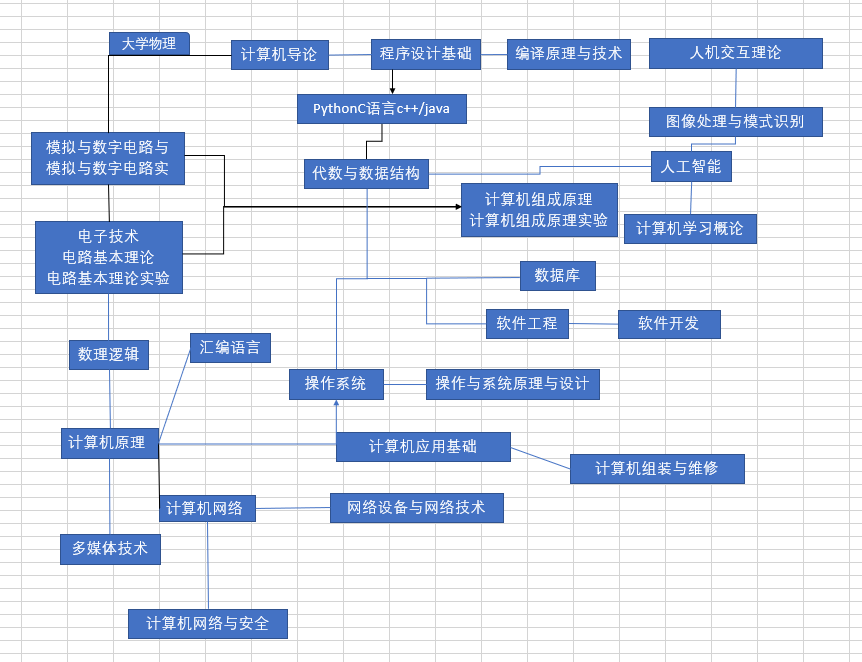

计算机导论期末大作业
一.计算机学科相关科目关系示意图

二.计算机学科相关资料链接
中国大学MOOC-大学计算机系列
计算机发展的四个阶段
计算机发展史（图片版）
计算机基础知识整理
计算机的应用领域
计算机专业推荐读书
What are the Five Generations of Computers?
中国计算机的发展
三.我对计算机专业的认识
谈到计算机专业，在上大学之前，我都仅认为它的主要内容就是编程以及它十分热门，做这行业厉害的人会赚很多钱。
自从来到大学，我查阅相关资料后才发现计算机行业里面门道很多。编程确实在计算机中十分重要，但它并非全部，更
像实现或验证“科学”的一种工具（科学包括计算机、数学、生物、化学）。它会与很多行业串联在一起，共同发展与
进步。对于专业应用，计算机在目前的应用很广泛，在人工智能，软件开发，信息管理等等领域都离不开计算机，很多
大型的工程对计算机的依赖性更大。对于个人的要求，计算机在目前的发展速度极快，未来的各个尖端领域都要依托计
算机发展，这个领域具有极好的发展前景。但该行业要想真正出头，少不了一番精妙的逻辑思维与丰厚的知识储备。而
且该行业对个人素质体质韧性也有要求，经常都是吃年轻饭的，到了一定年纪就会心有余而力不足。所以我认为要想在
计算机行业有所成就，就必须要从当下开始珍惜时间锻炼自身的计算机及其相关方面的能力，并且还要经常锻炼身体，
确保身体健康。
四.学业规划
| 规划时段 | 目标1 | 目标2 | 目标3 |
|---|
| 大一上 | 好好学习，适应大学生活 | 和同学们打好关系 | 多参加社团类活动，学会使用pr和ps |
| 大一下 | 好好学习，分流上计算机或电气专业 | 多参加社团类活动，英语过四级 | 考到驾照，自学python与C语言 |
| 大二上 | 好好学习，保证成绩，尽量保研 | 英语过六级且考高分，参加竞赛 | 适当参加社团 |
| 大二下 | 好好学习，保证成绩，尽量保研 | 英语过六级且考高分，才加竞赛 | 适当参加社团 |
| 大三上 | 好好学习，保证成绩，尽量保研 | 参加竞赛类活动 | 参加社会实践活动 |
| 大三下 | 好好学习，保证成绩，尽量保研 | 参加竞赛类活动 | 参加社会实践活动 |
| 大四 | 参加社会实践 | 在自己擅长方面深造 | 做一些喜欢做的事 |